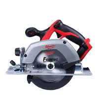
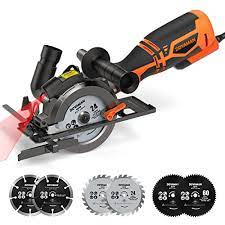
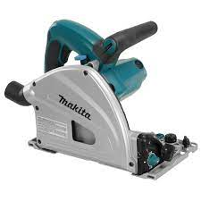
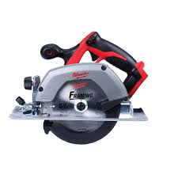
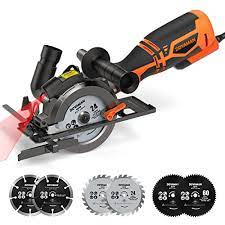
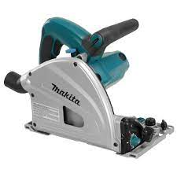
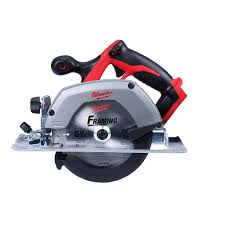
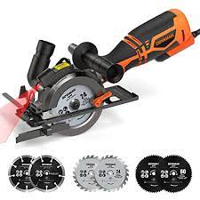
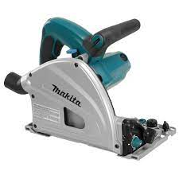

Welcome to the heart of STANLEY, where innovation meets precision. Our circular saws are crafted
to empower you with the tools you need to tackle any project with confidence and ease. Explore the range of
features, benefits, and cutting-edge technology that make our circular saws the best choice for
professionals and DIY enthusiasts alike.



Watch and Listen to Learn More!
How to Use a Circular Saw
here's is the small video that shows you perfectly how this machine works

 




